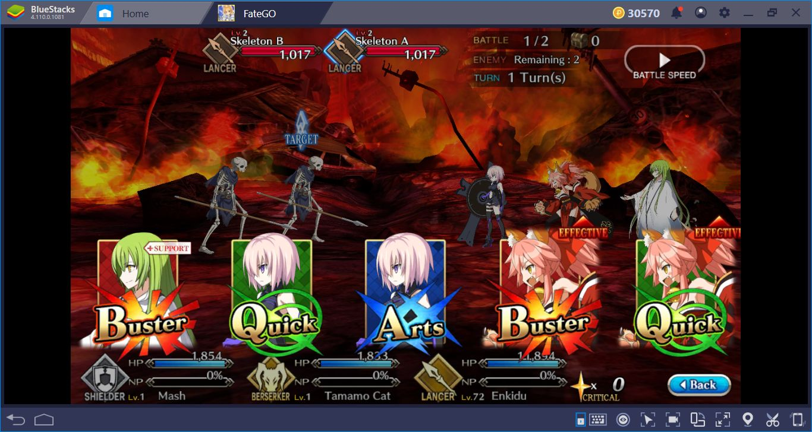

Fate/Grand Order

Fate/Grand Order (Japanese: フェイト・グランドオーダー, Hepburn:
Feito/Gurando Ōdā) is a free-to-play Japanese gacha mobile game,
developed by Lasengle (formerly Delightworks) using Unity, and
published by Aniplex, a subsidiary of Sony Music Entertainment Japan.
The game is based on Type-Moon's Fate/stay night franchise, and was
released in Japan on 29 July 2015 for Android, and on 12 August
2015, for iOS. English-language versions followed on 25 June 2017 in
the United States and Canada, and a Korean version was released
on 21 November 2017. An arcade version titled Fate/Grand Order
Arcade was released by Sega in Japan on 26 July 2018.
The game is centered around turn-based combat where the player, who
takes on the role of a "Master", summons and commands powerful
familiars known as "Servants" to battle enemies. The story narrative
is presented in a visual novel format, and each Servant has their own
scenario which the player can explore. Servants are obtained through
the gacha mechanic. As of July 2021, the game grossed $5.4 billion
worldwide, making it the seventh highest-grossing mobile game of all
time. Total revenues reached $7 billion by September 2023.

Fate/Grand Order is a turn-based role-playing game with some visual
novel elements. The player takes the role of a "Master" and
commands a group of individuals called "Servants", who are
typically historical, literary, and mythological figures from
various cultures. The player commands a party composed of up to 6
Servants in each battle, 3 active members, and 3 reserve members.
In each turn, the player is given a set of 5 Command Cards and may
use up to 3 of them in a turn to attack. Each Servant has 5 cards
the player may use; the cards for all the Servants on the field are
shuffled and dealt to the player each turn. The cards have three
types: Buster (a heavy attack), Arts (a medium attack that charges
a gauge for the Servant's "Noble Phantasm"), and Quick (a light
attack that generates Critical Stars that increase the probability
of critical hits next turn). If three similar cards are used in one
turn, they create a "Chain" which gives a bonus based on the cards'
properties. If three cards all corresponding to the same servant
are selected, then a "Brave Chain" will ensue, resulting in an
extra, more powerful, the attack being added to the end. Each
Servant also has skills that can be used before drawing Command
Cards; each skill gives effects in the battle, as well as a special
command card called "Noble Phantasm" that appears when the gauge is
full. The "Master" also has a separate set of skills and special
abilities called "Command Spells." Command Spells have a variety of
effects and recharge based on real-world time.
Servants are obtained via a gacha mechanic. Saint Quartz, an in-game
currency earned both by playing the game and via real money in-app
purchases, is used to summon new Servants and acquire "Craft Essences"
which give additional effects when equipped to a servant. This
summoning is random, with some servants available commonly, and
others rarely. Another currency is "Friend Points", which are more
easily acquired, but only can acquire common Servants with them. If
multiple copies of the same Servant are acquired, that servant's
"Noble Phantasm" can be increased.
The differences between mobile and Arcade versions are commonly the
characters' appearances: The mobile version uses 2D sprites, while
the Arcade version uses 3D models.
Pride of Steel - Fate/Grand Order - Original Soundtrack I
bronAn animated television film special titled Fate/Grand Order: First Order (Japanese: フェイト/グランドオーダー -First Order-, Hepburn: Feito/Gurando Ōdā -First Order-) aired on 31 December 2016. It was an adaptation of the game's prologue. The film, produced by the studio Lay-duce, was directed by Hitoshi Nanba and stars the voice actors Nobunaga Shimazaki, Rie Takahashi, and Ayako Kawasumi in the roles of the main characters who were projected into the past to try to prevent the approaching extinction of humanity. Aniplex of America has licensed the special in North America. MVM Films released the film in the UK.[54] It was followed by an animation short titled Fate/Grand Order: Moonlight/Lostroom (Japanese: フェイト/グランドオーダー -Moonlight/Lostroom-, Hepburn: Feito/Gurando Ōdā -Moonlight/Lostroom-) on 31 December 2017. It was directed by Hitoshi Nanba and Takurō Tsukada, with scripts by Kinoko Nasu, and music by Ryo Kawasaki. Aniplex of America licensed the second special in North American territories.